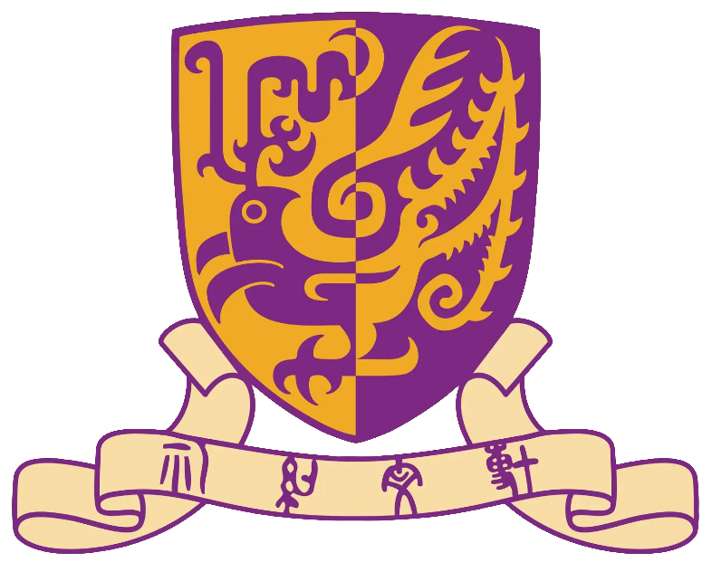

Biography
Jinsong Li (李劲松) is an incoming Ph.D. student at Multimedia Laboratory (MMLab) of The Chinese University of Hong Kong (CUHK), supervised by Prof. Dahua Lin. He also works closely with Dr. Jiaqi Wang. Before that, He received his B.E. degree in Computer Science at Xi'an Jiaotong University (XJTU) in 2024.His research interests focus on Large Multimodal Model.
Feel free to drop an email for any form of communication or collaboration! 🤗
Email: lijinsong0130@gmail.com
Google Scholar Github Curriculum Vitae
Education
|  |
The Chinese University of Hong Kong (CUHK)
Aug, 2024 - present Ph.D. in Information Engineering Advisor: Prof. Dahua Lin |
 |
Xi'an Jiaotong University (XJTU)
Sept, 2020 - Jun, 2024 B.E. in Computer Science GPA: 94.03 (91.03 + 3) / 100 [top 1.5%] |
Publications
(* equal contribution, † corresponding authors)
ShareGPT4V: Improving Large Multi-modal Models with Better Captions
Lin Chen*, Jinsong Li*, Xiaoyi Dong, Pan Zhang, Conghui He, Jiaqi Wang, Feng Zhao†, Dahua Lin†
arXiv Preprint, 2023 | Project Page
Half-Xor: A Fully-Dynamic Sketch for Estimating the Number of Distinct Values in Big Tables
Pinghui Wang†, Dongdong Xie, Junzhou Zhao, Jinsong Li, Zhicheng Li, Rundong Li, Yang Ren
IEEE Transactions on Knowledge and Data Engineering (TKDE) 2023 | PDF | under review
Awards
Internships
Research Intern @ Shanghai Artificial Intelligence Laboratory
Aug, 2023 - present
Research on the Multimodal Large Language Model.
Software Engineer Intern @ Huawei Technologies Co., Ltd.
Jul, 2023 - Aug, 2023
Conduct big data development using Java.
Research Intern @ PKU-DAIR Lab, Peking University
Mar, 2023 - Jun, 2023
Research on AutoML, mainly on Bayesian Optimization.
Research Intern @ MOE KLINNS Lab, Xi'an Jiaotong University
Sept, 2022 - Jan, 2023
Research on Sketch methods for Cardinality Estimation.
Baidu AI Elite Class Member @ Baidu Inc.
Dec, 2021 - Dec, 2022
A Joint Program between Xi'an Jiaotong University and Baidu.
Services
The Class President of CS002 @ Xi'an Jiaotong University
Sept, 2021 - Jun, 2024
The Student Representative of College @ Xi'an Jiaotong University
Nov, 2020 - Jun, 2021